%%{init: {"theme": "sandstone", "flowchart": {"curve": "basis"}}}%%
flowchart TD
root["Reference distribution used beyond the mean"]
root --> ref["Reference-based, composition estimated"]
root --> cts["Composition known, profiles estimated"]
root --> bay["Bayesian reference-based"]
root --> semi["Semi-reference: one unknown component"]
root --> free["Reference-free"]
ref --> uni["Genes independent: MuSiC, RNA-Sieve, DWLS, Bisque, RCTD, ReDeconv"]
ref --> multi["Gene-gene covariance: DECALS, MEAD, DeCovarT"]
cts --> csnet["CSNet, Unico"]
bay --> bcts["Profiles: bMIND, EPIC-unmix, BLADE, BEDwARS, BayesPrism"]
bay --> bprop["Proportions: DSection, gnSPADE"]
semi --> dem["DeMix, DeMixT, DeMixNB, BayICE, ISOpureR"]
free --> nmf["DSSC, GSNMF+, swCAM"]
Deconvolution with reference distributions: a review of methods that use more than the mean
2026-10-15
Source:vignettes/theory-review-distribution-aware-deconvolution.qmd
Scope
First-generation deconvolution fits a bulk profile with the mean expression of each purified population. This review covers the methods that also use the distribution of the purified profiles: at least their variance, and in some cases a covariance between genes or between cell types. DeCovarT belongs to that family: it plugs in a gene–gene covariance per cell type and maximises a Gaussian-convolution likelihood (derivatives vignette).
Every method is read through the same lens: what its observation law implies about the measurement process, most often UMI counts from single cells. Sec. 1 states the measurement and expression models that lens relies on. The methods follow, grouped by what they estimate and what they assume known:
- reference-based estimation of the composition, split by whether genes are treated as independent (Sec. 2);
- cell-type-specific moments when the composition is known (Sec. 3);
- Bayesian reference-based methods, for profiles or for proportions (Sec. 4);
- semi-reference methods that infer one unknown component (Sec. 5);
- reference-free methods that use co-expression structure (Sec. 6).
Sec. 7 compares them and lists their caveats. The DeCovarT model rebuilt for single-cell references is in the tailored vignette.
Note 1: Notation
Gene g=1,\ldots,G; cell type j=1,\ldots,J; bulk sample i=1,\ldots,N; single-cell replicate (donor) r; cell c.
Symbol Meaning y_{gi}, \boldsymbol{y}_{\cdot i} Bulk expression \boldsymbol{p}_{\cdot i}\in\Delta^{J-1} Cell-number fractions \boldsymbol{q}_{\cdot i} RNA (transcript) fractions, q_{ji}\propto p_{ji}S_j \boldsymbol{\mu}_{\cdot j}=S_j\boldsymbol{\theta}_{\cdot j} Per-cell mean of type j: cell size times relative abundance \boldsymbol{\Sigma}_j G\times G gene–gene covariance of type j \boldsymbol{\Omega}_g J\times J covariance across cell types for gene g (bMIND, EPIC-unmix) \boldsymbol{x}_{\cdot j,i} Purified profile of type j in sample i \boldsymbol{\Sigma}_{W,j}, \boldsymbol{\Sigma}_{B,j} Within- and between-replicate covariance of type j a_i, \boldsymbol{d} Sample scale and gene-wise platform ratio x_{gc}, s_c, b_g, \boldsymbol{\lambda}_{\cdot c} UMI count, size factor, capture efficiency, size-free expression of cell c The papers use their own indices; Table 2 translates them. Two kinds of covariance are easy to confuse and are kept apart throughout: \boldsymbol{\Sigma}_j couples genes within one cell type; \boldsymbol{\Omega}_g couples cell types within one gene.
Measurement and expression models for single-cell counts
A reference profile is a moment of a latent biological quantity, but it is estimated from counts produced by a sampling protocol. Sarkar and Stephens separate the two: a measurement model p(\boldsymbol{x}\mid\boldsymbol{\lambda}) describes the protocol given the true expression, an expression model p(\boldsymbol{\lambda}) describes the biology, and the observation model p(\boldsymbol{x}) is their composition (Sarkar and Stephens 2021). Fang and Pachter add that the cell-level scale factor is itself a product of a biological and a technical term (Fang and Pachter 2025). Both papers index genes by j and cells by i; below, gene is g and cell is c, so that j remains the cell type.
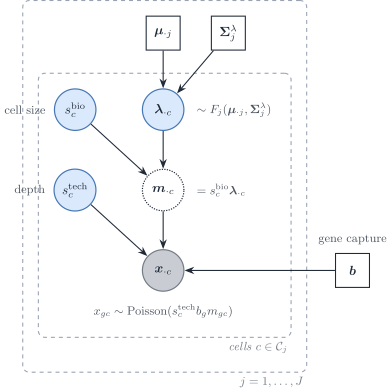
Figure 2: Measurement and expression model of a single-cell reference, in the notation of this vignette. Inside cell type j, the size-free expression \boldsymbol{\lambda}_{\cdot c} follows an expression model F_j with mean \boldsymbol{\mu}_{\cdot j} and covariance \boldsymbol{\Sigma}^{\lambda}_j; the biological size factor turns it into a molecule content; the technical size factor and the gene capture efficiency \boldsymbol{b} act through a Poisson measurement.
Poisson measurement of UMI counts
If each molecule of cell c is captured independently with a small probability, the multivariate hypergeometric sampling of molecules is close to a multinomial and each gene count is Poisson given the true content (Supplementary Note 1 of (Sarkar and Stephens 2021)):
x_{gc}\mid s^{\mathrm{tech}}_c,m_{gc} \sim\mathrm{Poisson}\bigl(s^{\mathrm{tech}}_c\,b_g\,m_{gc}\bigr), \qquad \boldsymbol{m}_{\cdot c}=s^{\mathrm{bio}}_c\,\boldsymbol{\lambda}_{\cdot c}. \tag{1}
Fang and Pachter write the same law as binomial thinning with capture rate b_gs^{\mathrm{tech}}_c, of which the Poisson is the low-capture limit, and normalise \mathbb{E}[s^{\mathrm{bio}}]=\mathbb{E}[s^{\mathrm{tech}}]=1 (their equations 1–2). Sarkar and Stephens instead take the observed library size x_{+c} as the size factor and a relative expression \lambda_{gc}=m_{gc}/m_{+c}; in that convention s^{\mathrm{bio}}_c cancels by construction, which is the removal of biological extrinsic noise that Fang and Pachter warn about. The two conventions are the two directions of the same rank-one Poisson fit: the point-mass MLE \hat\mu_g=\sum_cx_{gc}/\sum_cx_{+c} and the size-factor MLE of Eq. 3 below.
Three remarks connect the protocol to deconvolution.
- UMIs remove most gene-specific distortion. Unique molecular identifiers collapse PCR duplicates, which “substantially reduce unwanted variation, including differences in gene lengths and PCR amplification efficiencies” (Sarkar and Stephens 2021). What remains is a capture efficiency b_g that is constant across cells of one protocol. It is not identified separately from \boldsymbol{\lambda}, and it cancels from every within-protocol contrast, so it is absorbed into \boldsymbol{\mu}_{\cdot j} and \boldsymbol{\Sigma}_{W,j}. It does not cancel between a single-cell reference and a bulk library: the ratio d_g=b_g^{\mathrm{bulk}}/b_g^{\mathrm{ref}} is the gene-wise platform factor of plug-in scales (Strategy 4). Read-count protocols without UMIs and hybridisation microarrays carry larger gene- and probe-specific factors (amplification, length, affinity), which is why earlier deconvolution methods had to model gene-wise scales explicitly; with UMI references, the gene-wise factor reduces to one cross-platform ratio per gene.
- Random capture biases make the measurement overdispersed; constant ones do not. If b_{gc} varied from cell to cell, the measurement model would be negative binomial rather than Poisson (Box 1 and Supplementary Note 1.2 of Sarkar and Stephens). On spike-in controls the measurement dispersion was below 5\times10^{-3}, which adds about 5% to the variance of a gene with ten observed molecules. Overdispersion seen in single-cell data is therefore an expression property, \boldsymbol{\Sigma}^{\lambda}_j, plus extrinsic noise, not a protocol property.
- Zero inflation belongs to the expression model, if anywhere. Spike-in controls show no zero-generating measurement component, and a point-Gamma expression model beats a Gamma model for only 0.6–8.6% of genes across the datasets tested (Sarkar and Stephens 2021). Zeros are imperfect measurements of small \lambda_{gc} at low depth, “with no need for special terminology or special treatment”. For DeCovarT, which uses only the first two moments of the reference, a zero-inflated observation model is unnecessary: the moments of the counts already contain the zeros. The argument is made for UMI data; the authors note that it may not hold for read counts amplified by PCR without UMIs.
Expression models and the observation models they induce
Integrating the expression model against Eq. 1 gives the observation model gene by gene (Table 1 of (Sarkar and Stephens 2021)).
| Expression model for \lambda_{gc} | Observation model for x_{gc} | Examples |
|---|---|---|
| Point mass \lambda_{gc}=\mu_g | Poisson | analytic |
| Gamma, mean \mu_g, variance \mu_g^{2}\phi_g | Negative binomial |
edgeR, DESeq2, SAVER
|
| Point-Gamma | Zero-inflated negative binomial |
ZINB-WaVE (multigene) |
| Unimodal or fully nonparametric | Flexible |
ashr, DESCEND
|
| Low rank, \lambda_{gc}=\mu_{gc}u_{gc}, \mu=h^{-1}(\boldsymbol{L}\boldsymbol{F}^{\top}) | Flexible | GLM-PCA, scVI
|
A gene whose expression model is a point mass inside a homogeneous population is a Poisson gene: its count has no variability beyond sampling and the extrinsic size factor. Overdispersion relative to a Poisson, the hallmark of the negative binomial, then measures either biological variability of \lambda_{gc} or variability of s_c.
Extrinsic noise, size factors and Poisson genes
Fang and Pachter show that a cell-wide factor explains the baseline overdispersion of single-cell counts. Under Eq. 1 with s_c=s^{\mathrm{bio}}_cs^{\mathrm{tech}}_c independent of \boldsymbol{\lambda}_{\cdot c}, \mathbb{E}[s_c]=1 and \nu=\operatorname{CV}^{2}(s_c), their equation (3) reads, in our notation and inside one cell type,
\frac{\operatorname{Cov}(x_{gc},x_{hc})}{\mathbb{E}[x_{gc}]\mathbb{E}[x_{hc}]} =\nu+(1+\nu)\frac{\Sigma^{\lambda}_{j,gh}}{\mu_{gj}\mu_{hj}} +\frac{\delta_{gh}}{\mathbb{E}[x_{gc}]}, \qquad 1+\nu=(1+\nu^{\mathrm{bio}})(1+\nu^{\mathrm{tech}}). \tag{2}
For two genes that are intrinsically uncorrelated, or for one gene that is intrinsically Poisson, the normalised covariance equals \nu (their equation 5). That identity gives an estimator of \nu (the mode of the normalised covariances over gene pairs) and a selection rule for Poisson genes (those whose normalised variance minus the Poisson term has a bootstrap interval containing \hat\nu). On those genes \mathcal{P}, the size factor has the closed-form MLE
\hat s_c=\frac{\sum_{g\in\mathcal{P}}x_{gc}}{\sum_{g\in\mathcal{P}}\mu_g}. \tag{3}
Two findings matter here. Normalising each cell by its total removes s^{\mathrm{bio}}_c together with s^{\mathrm{tech}}_c, and with it the biological extrinsic variability, including cell size (Fang and Pachter 2025). In peripheral blood, sums over Poisson genes no longer track total UMI counts and differ between cell types, so the choice of size factor changes downstream comparisons. Separating s^{\mathrm{tech}}_c from s^{\mathrm{bio}}_c needs external controls (spike-ins, ambient RNA, pooled RNA); the nascent-mRNA counts did not fit the binomial sampling model in their pooled-RNA experiment.
What the measurement model implies for the reference covariance
Write the same identity in matrix form (a direct consequence of Eq. 1 and the law of total covariance; the derivation is ours). With \boldsymbol{\mathcal{B}}=\operatorname{diag}(\boldsymbol{b}),
\operatorname{Cov}(\boldsymbol{x}_{\cdot c}\mid c\in j) =\underbrace{\operatorname{diag}\bigl(\boldsymbol{\mathcal{B}}\boldsymbol{\mu}_{\cdot j}\bigr)}_{\text{Poisson measurement}} +\boldsymbol{\mathcal{B}}\Bigl[ \underbrace{(1+\nu)\boldsymbol{\Sigma}^{\lambda}_j}_{\text{biology}} +\underbrace{\nu\,\boldsymbol{\mu}_{\cdot j}\boldsymbol{\mu}_{\cdot j}^{\top}}_{\text{size factor}} \Bigr]\boldsymbol{\mathcal{B}}. \tag{4}
The sample covariance of raw UMI counts, which is what a single-cell reference returns as \hat{\boldsymbol{\Sigma}}_{W,j}, mixes three objects. Only part of it belongs in the bulk law.
- The Poisson diagonal is single-cell measurement noise. It is produced at single-cell depth and is not part of the tissue. A bulk library has its own sampling noise, on its own depth, which the diagonal term \boldsymbol{D}_i carries. Plugging raw-count covariances into \boldsymbol{S}_W imports the reference sampling noise into the bulk covariance; subtracting \operatorname{diag}(\bar{\boldsymbol{x}}_j) first removes it.
- The technical size-factor term is not biology either. The rank-one term \nu^{\mathrm{tech}}\boldsymbol{\mu}_{\cdot j}\boldsymbol{\mu}_{\cdot j}^{\top} induces a positive correlation between all genes. It inflates the apparent network and is a protocol artefact.
- The biological size factor is part of the bulk. Cells of one type differ in volume and cycle phase; a tissue sums those cells as they are. The term \nu^{\mathrm{bio}}\boldsymbol{\mu}_{\cdot j}\boldsymbol{\mu}_{\cdot j}^{\top} belongs in \boldsymbol{\Sigma}_{W,j}, and library-size normalisation that removes it understates the within-type variance that the bulk accumulates.
The corresponding moment estimator, with \hat\nu^{\mathrm{tech}} from spike-ins or Poisson genes, is
\hat{\boldsymbol{\Sigma}}_{W,j} =\hat{\boldsymbol{C}}_j-\operatorname{diag}(\bar{\boldsymbol{x}}_j) -\frac{\hat\nu^{\mathrm{tech}}}{1+\hat\nu^{\mathrm{tech}}}\, \bigl[\hat{\boldsymbol{C}}_j-\operatorname{diag}(\bar{\boldsymbol{x}}_j)+\bar{\boldsymbol{x}}_j\bar{\boldsymbol{x}}_j^{\top}\bigr], \tag{5}
where \hat{\boldsymbol{C}}_j is the sample covariance of the type-j counts and \bar{\boldsymbol{x}}_j their mean. It is the s^{\mathrm{tech}}-free covariance of \boldsymbol{\mathcal{B}}\boldsymbol{m}_{\cdot c} obtained by solving Eq. 4 with 1+\nu=(1+\nu^{\mathrm{bio}})(1+\nu^{\mathrm{tech}}) (our derivation, to be checked by simulation before use). Estimating \nu^{\mathrm{tech}} before the deconvolution is the first plug-in of Strategy 4 (plug-in scales (Strategy 4)).
Before single cells: measurement models for sorted population profiles
Before droplet single-cell sequencing, a reference column was a bulk measurement of a physically sorted population: FACS or magnetic sorting, then a microarray or a bulk RNA-seq library. The measurement model was the one of the platform, applied to a pool of many cells.
- Microarrays. A probe intensity is a background plus a probe-specific affinity times the abundance, with errors that are roughly additive at low intensity and multiplicative at high intensity. Analyses of differential expression worked on \log_2 intensities, where the multiplicative error becomes additive. Deconvolution could not: mixing is additive in the abundance, so the first reference-based methods fitted linear models on unlogged intensities (Abbas et al. 2009; Shen-Orr et al. 2010; Lähdesmäki et al. 2005). The probe affinity is a gene-wise factor of the platform. It cancels within one platform and does not cancel between platforms, which is the origin of the gene-wise scale \boldsymbol{d} of later methods.
- Bulk RNA-seq of sorted populations. Reads are counts with a library size and a gene-length factor (for full-length protocols). Replicate libraries of one sorted population vary by a negative binomial dispersion that mixes biological and technical variation. Normalised counts on a linear scale (CPM, TPM) became the default input, with the same warning against logarithms.
- What the reference variance meant. With a handful of sorted replicates per population, the only second-order quantity available was a between-replicate variance of the population mean. That is the quadratic layer \sum_jp_j^{2}\boldsymbol{\Sigma}_{B,j} of the tailored vignette, and the object released DeCovarT was designed for. A within-type, cell-to-cell covariance did not exist in that design.
Two biases of sorted references have no single-cell analogue: sorting selects cells on a few surface markers, so a “pure” population can contain contaminating types; and the sorting itself can change expression before lysis. Single-cell references remove the first by labelling cells after the fact, and replace the platform model by the Poisson measurement of Sec. 1.1.
From measurement models to bulk observation laws
A deconvolution method chooses a law for the bulk. Read with the split of Sec. 1, that law is a measurement model (multinomial, Poisson) composed with an expression model for the purified profiles (Gaussian, log-normal, Gamma). Figure 3 places the methods of this review by the support of \boldsymbol{y} first.
%%{init: {"theme": "sandstone"}}%%
flowchart TD
A["Bulk observation law"] --> B["Discrete counts"]
A --> C["Continuous intensities"]
B --> D["Multinomial: ISOpureR, BayesPrism, gnSPADE"]
B --> E["Poisson or Poisson-log-normal: DeconV, RCTD"]
B --> NB["Negative binomial convolution: DeMixNB"]
C --> F["Univariate Gaussian: DSection, BayICE, DWLS, MuSiC"]
C --> RS["CLT Gaussian with noisy reference: RNA-Sieve, ReDeconv"]
C --> LN["Log-normal components: DeMix, DeMixT, BLADE"]
C --> G["Multivariate Gaussian convolution: DeCovarT"]
C --> M["Moments only: DECALS, MEAD, CSNet"]
Discrete counts
A multinomial (or Dirichlet–multinomial) model treats \boldsymbol{y}_{\cdot i} as integer reads that sum to a library size. ISOpureR implements a hierarchical multinomial–Dirichlet purification of mixed tumour profiles (Anghel et al. 2015). BayesPrism places a multinomial likelihood on bulk counts with a patient-derived scRNA-seq prior and jointly infers \boldsymbol{p}_{\cdot i} and sample-level CTS expression (Chu et al. 2022). DeconV instead uses Poisson aggregation from single-cell to bulk (sums of independent Poissons remain Poisson) and returns interval estimates of \boldsymbol{p}_{\cdot i} (Gynter et al. 2023). RCTD is the Poisson–log-normal mixture of the RCTD Poisson–log-normal law: each UMI picks a type, then a gene, with a gene-wise log-normal overdispersion and a two-stage platform correction (Cable et al. 2022); the comparison with DeCovarT’s convolution is in the RCTD comparison.
Over-dispersed, correlated counts are the domain of the multivariate Poisson–log-normal (PLN) family: a latent Gaussian vector induces dependence, and a Poisson observation layer yields integer reads (Chiquet et al. 2021, 2018). ZIPLN adds a Bernoulli zero-inflation layer for dropout (Batardière et al. 2025). A DeCovarT-style extension would replace Eq. 15 by a PLN (or ZIPLN) convolution on the latent log-abundance scale, keeping the ALR map on \boldsymbol{p}. A multinomial logit-normal on the gene simplex is a different discrete model: it is compositional association, not a cell-type convolution (two simplices without convolution).
Second-generation deconvolution: univariate versus multivariate
Second-generation methods use a single-cell reference and model, in some form, the variability of the cell-type profiles. The usual split into regression and probabilistic engines hides the property that matters for DeCovarT: whether the bulk model treats genes as independent (a diagonal variance per gene) or keeps a gene–gene covariance. Figure 4 uses that split.
%%{init: {"theme": "sandstone", "flowchart": {"curve": "basis"}}}%%
flowchart TD
root["Variability of cell-type profiles in the bulk model"]
root --> uni["Univariate: genes independent"]
root --> multi["Multivariate: gene-gene covariance"]
uni --> ureg["Weighted least squares"]
uni --> ulik["Likelihood"]
ureg --> music["MuSiC: cross-subject weights"]
ureg --> dwls["DWLS: dampened relative-error weights"]
ureg --> bisque["Bisque: gene-wise affine map, NNLS"]
ulik --> sieve["RNA-Sieve: CLT Gaussian, noisy reference"]
ulik --> rctd["RCTD: Poisson-log-normal mixture"]
ulik --> redeconv["ReDeconv: variance-aware, CLTS"]
multi --> mmom["Moment equations, no density"]
multi --> mlik["Full Gaussian likelihood"]
mmom --> decals["DECALS: subject-specific covariance, constrained OLS"]
mmom --> mead["MEAD: errors in variables, dependency graph"]
mlik --> deco["DeCovarT: convolution, sparse precision"]
A common notation
Each paper uses its own indices; several use j for the gene or the subject. Table 2 maps them to this vignette. The scale columns show how one model is reparametrised into another by arithmetic alone.
| This vignette | MuSiC |
RNA-Sieve |
DWLS |
Bisque |
RCTD |
DECALS |
MEAD |
|
|---|---|---|---|---|---|---|---|---|
| gene, type, sample | g, j, i | g, k, j | g, k, b | i, j, – | j, k, i | j, k, i | j, k, i | g, k, i |
| reference unit | replicate r | subject j | cell i | cell | individual i' | cell | – | individual j |
| target | \boldsymbol{p}_{\cdot i} | \mathbf{p}_j | \boldsymbol{\alpha} | \mathbf{x}/\mathbf{1}^{\top}\mathbf{x} | \mathbf{p}_i | \boldsymbol{\beta}_i normalised | \boldsymbol{\pi}_i | \mathbf{p}_i |
| cell counts | m_{ji}, n_i | m_j^{k}, m_j | –, n | \mathbf{x} | – | – | – | – |
| per-cell mean | \boldsymbol{\mu}_{\cdot j}=S_j\boldsymbol{\theta}_{\cdot j} | S^{k}\boldsymbol{\theta}^{k} | \mathbf{M}_{\cdot k} | \mathbf{S}_{\cdot j} | \mathbf{Z}_{\cdot k}\approx\boldsymbol{\theta}_{\cdot j} | normalised mean | \mathbf{w}_k (FPKM) | \mathbf{U}_{\cdot k} |
| cell size | S_j | S^{k} (mean library size) | \mathbf{1}^{\top}\mathbf{M}_{\cdot k} | assumed equal | removed by CPM | removed | removed by FPKM | kept in \mathbf{U} |
| sample scale | a_i | C_j^{-1} | n | \mathbf{1}^{\top}\mathbf{x} | – | N_ie^{\alpha_i} | absorbed | \gamma_i |
| gene platform | \boldsymbol{d} | intercept \alpha_{jg} | none | none | (\beta_{0g},\beta_g) | estimated d_g | none | \lambda_g=\alpha_g/\alpha^{r}_g |
| type variability | \boldsymbol{\Sigma}_{W,j}, \boldsymbol{\Sigma}_{B,j} | \sigma^{2}_{gk} (between, diagonal) | s_{g,k} (within, diagonal) | – | – | – | \boldsymbol{\Sigma}^{(k)} (between, full) | \mathbf{V}_g (reference noise) |
Three reparametrisations recur.
-
Counts to fractions. A model in cell counts, \boldsymbol{y}=\boldsymbol{\mu}\boldsymbol{m}, becomes a model in fractions by dividing by the expected number of cells, \boldsymbol{y}/n=\boldsymbol{\mu}\boldsymbol{p}.
RNA-Sievekeeps n as a parameter;DWLSestimates \mathbf{x} (its “cell-type numbers”) and normalises at the end. -
Total molecules to average cell size.
MuSiCequation (2) gives \sum_gX_{jg}=m_j\sum_kp^{k}_jS^{k}. Dividing by the number of cells m_j gives the average cell size of the sample, \bar S_i=\sum_jp_{ji}S_j, andMuSiC’s normalising constant is its inverse: C_i=\bar S_i^{-1}. Library-size normalisation therefore returns RNA fractions q_{ji}=p_{ji}S_j/\bar S_i, not cell fractions. -
Scale times composition.
MEADestimates \boldsymbol{\beta}_i=\gamma_i\boldsymbol{p}_i and recovers \boldsymbol{p}_i=\boldsymbol{\beta}_i/\|\boldsymbol{\beta}_i\|_1;RCTDestimates w_{ji}=p_{ji}e^{\alpha_i} and normalises. Both are the unnormalised parametrisation \boldsymbol{w}_{\cdot i}=a_i\boldsymbol{p}_{\cdot i} of Strategy 1 (the sample-wide capture scale), whose total identifies the sample scale.
Univariate methods: genes independent
MuSiC
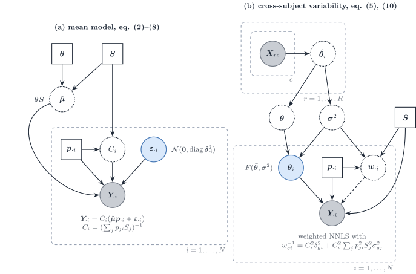
Figure 5: MuSiC (Wang et al. 2019) in this vignette’s notation. (a) The mean model: bulk relative abundance is a cell-size-weighted mixture of relative profiles \boldsymbol{\Theta}, rescaled by C_i. (b) The multi-subject reference: subject-level relative profiles \boldsymbol{\Theta}_i vary around the cross-subject mean with variance \boldsymbol{\sigma}^{2}, and the inverse of the resulting gene variance weights a non-negative least squares fit.
MuSiC starts from molecules: the bulk of subject i holds X_{gi}=\sum_jm_{ji}S_j\theta_{gj}, with S_j the mean total molecules per cell of type j (equation 2). It works on relative abundance Y_{gi}=X_{gi}/\sum_{g'}X_{g'i}, so that, with the reparametrisation above,
Y_{gi}=C_i\Bigl(\sum_jp_{ji}S_j\theta_{gj}+\varepsilon_{gi}\Bigr), \qquad \operatorname{Var}(Y_{gi}\mid\boldsymbol{p}_{\cdot i}) =C_i^{2}\delta_{gi}^{2}+C_i^{2}\sum_jp_{ji}^{2}S_j^{2}\sigma^{2}_{gj} =w_{gi}^{-1} \tag{6}
(equations 8–10). The second term comes from subject-level relative profiles \theta_{gj,i}\sim F(\theta_{gj},\sigma^{2}_{gj}) (assumption A1): it is the diagonal of the between-replicate layer \boldsymbol{S}_B(\boldsymbol{p}), quadratic in p_{ji}, and it requires a multi-subject reference. Cross terms between types are dropped, which implicitly assumes independence across types. \delta^{2}_{gi} is the bulk residual \boldsymbol{D}_i. The within-type cell scatter \boldsymbol{\Sigma}_{W,j} has no term in Eq. 6; it is used only to select genes with small within-cluster variance in the tree-guided recursion. Estimation is weighted non-negative least squares, with the weights updated from an initial fit because \delta^{2}_{gi} is unknown, followed by rescaling to the simplex.
Scales and identifiability. S_j is plugged in as the mean library size of type j in the reference. That substitution returns cell fractions only under assumption A3', a common capture efficiency \tilde S_j/S_j across types (the MuSiC assumptions); otherwise MuSiC estimates the RNA-weighted product p_{ji}S_j. Under A1–A3 alone the paper claims only the trend of proportions across subjects. Absolute S_j is not needed: it cancels into C_i. A gene- and subject-specific intercept \alpha_{gi} absorbs protocol bias. MuSiC2 keeps the weights and removes genes that are differentially expressed between the reference and bulk conditions (Fan et al. 2022).
RNA-Sieve
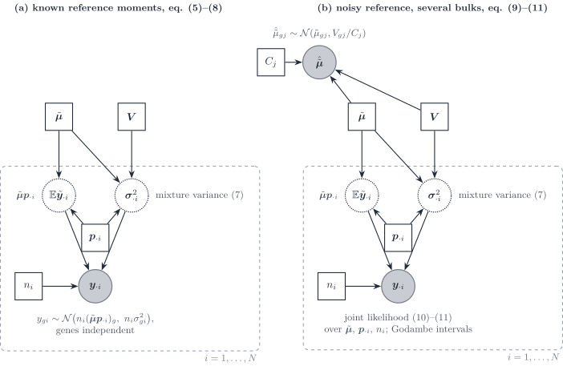
Figure 6: RNA-Sieve (Erdmann-Pham et al. 2021). (a) With known reference moments, the bulk is the sum of n_i cells drawn from the cell mixture, with a central-limit Gaussian per gene whose variance is the mixture variance. (b) The reference means are themselves noisy averages of C_j cells; the joint likelihood over bulks and reference means is maximised, with Godambe sandwich intervals.
RNA-Sieve writes the bulk as a sum of n cells, each a draw from the cell mixture the mixture-of-cells covariance restricted to one gene. By the central limit theorem,
y_{gi}\sim\mathcal{N}\bigl(n_i(\boldsymbol{\mu}\boldsymbol{p}_{\cdot i})_g,\ n_i\sigma^{2}_{gi}\bigr), \qquad \sigma^{2}_{gi}=\sum_jp_{ji}\bigl(V_{gj}+\mu_{gj}^{2}\bigr)-(\boldsymbol{\mu}\boldsymbol{p}_{\cdot i})_g^{2}, \tag{7}
with genes independent (equations 5–8). The variance is linear in n_i and in \boldsymbol{p}, minus the square of the mixture mean: the within-type variance \sum_jp_{ji}V_{gj} plus the spread of the type means, the diagonal of the mixture-of-cells covariance. The reference means are noisy, \tilde\mu_{gj}\sim\mathcal{N}(\mu_{gj},V_{gj}/C_j) (equation 9), and are estimated jointly with (\boldsymbol{p}_{\cdot i},n_i) from all bulks (equations 10–11). Marginalising \tilde{\boldsymbol{\mu}} instead would add \sum_jp_{ji}^{2}V_{gj}/C_j, a quadratic errors-in-variables term that vanishes as the reference grows (our remark).
Scales. Raw counts keep S_j inside \mathbf{M}, so \boldsymbol{\alpha} are cell fractions; the optional rescaling of every cell to the median library size removes S_j and turns them into RNA fractions. Any global protocol difference is absorbed into n, which then “loses interpretability” across protocols (Supplementary S1.4). Intervals come from the observed Fisher information or, by default, from the Godambe matrix, centred at the Kullback–Leibler projection under misspecification. The paper notes that gene correlation “may be incorporated” once it is known, but does not implement it.
DWLS
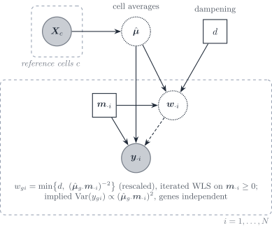
Figure 7: DWLS (Tsoucas et al. 2019). The signature is the average of reference cells; the bulk is fitted in cell-type numbers \boldsymbol{m}_{\cdot i} by iterated weighted least squares, with weights equal to the inverse squared fitted mean, capped by a dampening constant d.
DWLS fits the cell-type numbers \mathbf{x}=\boldsymbol{m}_{\cdot i} by
\hat{\boldsymbol{m}}_{\cdot i} =\arg\min_{\boldsymbol{m}\ge\boldsymbol{0}}\sum_g\bar w_{gi}\bigl(y_{gi}-\hat{\boldsymbol{\mu}}_{g\cdot}\boldsymbol{m}\bigr)^{2}, \qquad \bar w_{gi}=\min\Bigl\{d,\ \frac{(\hat{\boldsymbol{\mu}}_{g\cdot}\hat{\boldsymbol{m}}_{\cdot i})^{-2}}{\min_{g'}(\hat{\boldsymbol{\mu}}_{g'\cdot}\hat{\boldsymbol{m}}_{\cdot i})^{-2}}\Bigr\}, \tag{8}
iterated from an ordinary least squares start, with d=2^{q} chosen to minimise the variance of estimates over random half-gene subsets (equations 6–15). The weights minimise relative rather than absolute error. Read as a variance model, they imply \operatorname{Var}(y_{gi})\propto(\hat{\boldsymbol{\mu}}_{g\cdot}\boldsymbol{m}_{\cdot i})^{2}, a constant coefficient of variation; the paper motivates the weights by relative error and does not state a variance model. There is no \boldsymbol{\Sigma}_{W,j} term and genes are independent. The paper states the equal-RNA-per-cell assumption under which \mathbf{x} are cell numbers; otherwise they are RNA-weighted.
Bisque
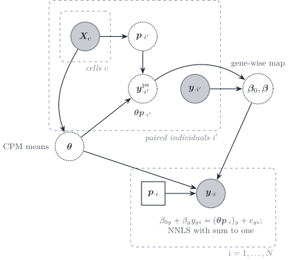
Figure 8: Bisque (Jew et al. 2020), paired mode. For individuals with both assays, the single-cell counts give a CPM signature \boldsymbol{\Theta} and counted proportions, hence a pseudo-bulk; a gene-wise linear map from observed bulk to pseudo-bulk is learned on those pairs and applied to the remaining bulks before non-negative least squares.
Bisque learns the platform shift instead of modelling it. In paired mode it fits \eta_{gi'}=\beta_{0g}+\beta_gy_{gi'}+\epsilon_{gi'} per gene, with \boldsymbol{\eta}_{\cdot i'}=\boldsymbol{\Theta}\boldsymbol{p}_{\cdot i'} the pseudo-bulk of individual i' (equation 1); in unpaired mode it matches the first two moments of each gene across samples (equations 2–3). The transformed bulk is then fitted by non-negative least squares with a sum-to-one constraint. The fitting step has homoscedastic residuals; the variability of the reference enters only through the between-sample moments used in the map. Because \boldsymbol{\Theta} is built from CPM, cell size is removed from the signature; the gene-wise affine map absorbs gene and platform factors, not a type-specific S_j. In unpaired mode the cohort mean composition is assumed equal to the mean composition of the single-cell individuals.
RCTD
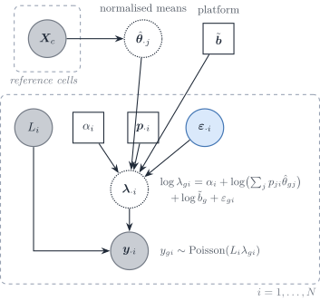
Figure 9: RCTD (Cable et al. 2022) in this vignette’s notation. The reference is collapsed to fixed normalised means. Sample i carries an observed depth N_i, a leftover scale \alpha_i, a composition and a gene-wise overdispersion; the platform \boldsymbol{d} is shared across samples and is not estimated inside the per-sample fit.
RCTD sits one layer below the DeCovarT plate of Figure 13. Each UMI is first assigned a type with probability p_{ji}, then a gene from that type’s relative profile: a read-level mixture, not a convolution of random population vectors (Cable et al. 2022). Conditional on the rate, the gene counts are Poisson; the rate is log-normal around a linear mixture of the fixed means. In DeCovarT symbols,
y_{gi}\mid\lambda_{gi} \sim \mathrm{Poisson}(N_i\lambda_{gi}), \qquad \log\lambda_{gi} = \alpha_i + \log\Bigl(\sum_j p_{ji}\mu_{gj}\Bigr) + \log d_g + \varepsilon_{gi}, \tag{9}
with \varepsilon_{gi} independent \mathcal{N}(0,\sigma_\varepsilon^2) (heavy-tailed in the implementation). The Poisson mean is therefore
\mathbb{E}[y_{gi}\mid\varepsilon_{gi}] = \underbrace{N_i e^{\alpha_i}}_{a_i} \, d_g \, e^{\varepsilon_{gi}} \sum_j p_{ji}\mu_{gj}. \tag{10}
N_i is observed depth; \alpha_i is a leftover sample scale; d_g is the gene-wise platform that DeCovarT’s \boldsymbol{d} names. The diagonal residual \varepsilon_{gi} is technical plus unmodelled gene-wise extra-Poisson noise, the count-scale cousin of \boldsymbol{\Sigma}_{\mathrm{obs},i}. Genes are independent given \varepsilon. Because \boldsymbol{\mu}_{\cdot j} is plugged in, Eq. 10 is a mixture of rates. DeCovarT’s the released convolution is a convolution of random type profiles: after averaging to a continuous expression vector, the bulk is \sum_j p_{ji}\boldsymbol{Z}_{ij} with \boldsymbol{Z}_{ij} Gaussian, hence quadratic in \boldsymbol{p}. A mixture is the right generative story at the UMI; a convolution is the right story at the aligned population mean.
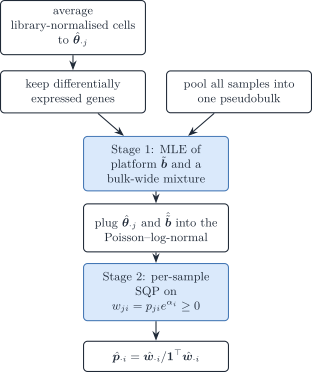
Figure 10: RCTD estimation. Stage 1 identifies the gene-wise platform from a pseudobulk of all samples; stage 2 fits each sample by sequential quadratic programming on the unnormalised weights w_{ji}=p_{ji}e^{\alpha_i}.
The fit is two-stage for the same identifiability reason as alignment scales: \boldsymbol{d} cannot be free inside one sample. That is Strategy 4 in its purest form (plug-in scales (Strategy 4)).
SQP versus second-order descent. After stage 1, RCTD maximises a non-convex Poisson–log-normal log-likelihood in the unnormalised weights w_{ji}=p_{ji}e^{\alpha_i}, subject to w\ge 0 only (the simplex is recovered by normalising). The local quadratic Taylor model of that objective is a constrained quadratic programme. The Hessian is often indefinite, so a plain Newton step is not a descent direction; sequential quadratic programming keeps the positive-semidefinite part of the Hessian (eigenvalue clipping) and solves the QP with quadprog, a sequential convex programme in the sense of Duchi, reused from DWLS (Tsoucas et al. 2019). Inequality constraints and doublet/triplet cardinality penalties (active-set zeros) are native to that orthant formulation. DeCovarT instead maps \boldsymbol{p} to an unconstrained ILR chart and uses an analytic score and Hessian of a Gaussian convolution, with Marquardt damping when the Hessian is poorly conditioned. That second-order path is available because the observation is already an averaged, aligned intensity and the simplex is handled by the chart rather than by w\ge 0. It is the wrong local model for Eq. 9: the likelihood is non-convex in w, the support is the non-negative orthant, and many samples are expected to sit on a face.
ReDeconv
ReDeconv names three ways a single-cell reference distorts deconvolution: rescaling every cell to a common total (CP10K), which erases transcriptome size; the gene-length mismatch between UMI single-cell counts and full-length bulk libraries; and ignoring the within-type variance (Lu et al. 2025).
Model. The bulk is a sum of k_j independent cells of each type. By the central limit theorem, and after the rescaling y_{gi}=c\,g_{gi} with f_j=ck_j,
y_{gi}\sim\mathcal{N}\Bigl(\sum_jf_j\mu_{gj},\ c\sum_jf_j\sigma^{2}_{gj}\Bigr), \tag{11}
with genes independent, and the composition is estimated by maximising the product of these densities over genes. The variance is linear in the weights: it is the diagonal of the within-type layer \kappa_i\sum_jp_{ji}\boldsymbol{\Sigma}_{W,j} of the tailored vignette, the same structure as RNA-Sieve without the spread of type means (the labels are given, not drawn). The optimiser, the estimation of c and the final simplex step are not stated in the paper.
Transcriptome size. CLTS (count-based linearised transcriptome size) normalisation fits, for each single-cell sample i, a line x_{ij}=a_ix_{1j}+b_i between its mean transcriptome sizes per type and those of a baseline sample, then rescales every count as u_{icg}\leftarrow u_{icg}/a_i+(v_{\max}-b_i/a_i)/G with v_{\max}=\max_ib_i/a_i. Differences of transcriptome size between types within a sample are kept; differences between samples are removed. With one single-cell sample, raw UMI counts are used. In the notation of Sec. 1, CLTS keeps S_j in \boldsymbol{\mu}_{\cdot j}=S_j\boldsymbol{\theta}_{\cdot j} and removes the sample-wide part of the size factor, so the fitted weights are cell fractions rather than RNA fractions.
Caveats. Signature genes are chosen by a t-test, a fold change and a small coefficient of variation \sigma_{gj}/\mu_{gj}, about 100 per type. The synthetic benchmarks draw bulk and reference from the same single-cell source, which minimises the within-type mismatch the method targets, as the authors acknowledge.
Multivariate methods: gene–gene covariance
DECALS
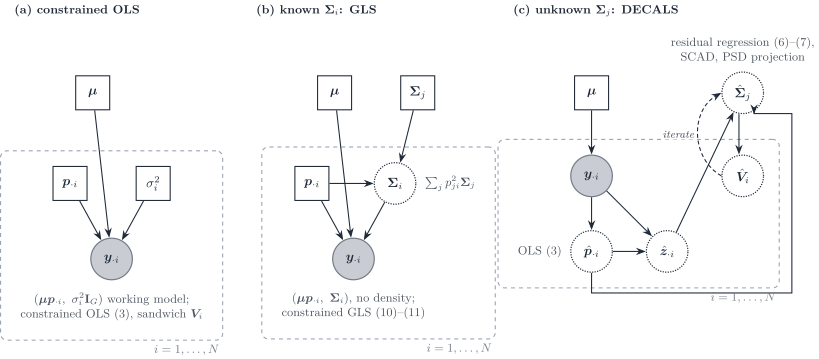
Figure 11: DECALS (Cai et al. 2024) as three increasingly informed working models. (a) Constrained ordinary least squares with an implicit identity covariance; the subject-specific covariance enters only the sandwich variance. (b) Constrained generalised least squares when \boldsymbol{\Sigma}_i=\sum_jp_{ji}^{2}\boldsymbol{\Sigma}_j is known. (c) DECALS proper: the type covariances are unknown and are estimated from bulk residuals across samples, with a bias correction iterated with the variance of \hat{\boldsymbol{p}}_{\cdot i}; the point estimate stays the OLS one.
DECALS makes no distributional assumption on the bulk. Its model (equations 1–2, 5) is
\boldsymbol{y}_{\cdot i}=\sum_jp_{ji}\boldsymbol{x}^{(j)}_i =\boldsymbol{\mu}\boldsymbol{p}_{\cdot i}+\boldsymbol{\epsilon}_i, \qquad \operatorname{Cov}(\boldsymbol{\epsilon}_i)=\boldsymbol{\Sigma}_i=\sum_jp_{ji}^{2}\boldsymbol{\Sigma}^{(j)}, \tag{12}
with subject-level type profiles \boldsymbol{x}^{(j)}_i independent across types: exactly the quadratic layer \boldsymbol{S}_B(\boldsymbol{p}) and released DeCovarT’s covariance, without a density. The three panels of Figure 11 are the paper’s three estimators.
- Constrained OLS (equation 3) is the point estimator. For a large number of genes the inequality constraints are inactive and the estimator is the equality-constrained projection \hat{\boldsymbol{p}}=\mathbf{U}\tilde{\boldsymbol{p}} of the OLS solution (Lemma S1). Its asymptotic covariance is the sandwich \boldsymbol{V}_i=\mathbf{U}\mathbf{D}\mathbf{U}^{\top} with \mathbf{D}=(\tfrac1G\boldsymbol{\mu}^{\top}\boldsymbol{\mu})^{-1}\tfrac1G\boldsymbol{\mu}^{\top}\boldsymbol{\Sigma}_i\boldsymbol{\mu}(\tfrac1G\boldsymbol{\mu}^{\top}\boldsymbol{\mu})^{-1}.
- Constrained GLS with known \boldsymbol{\Sigma}_i (equations 10–11) is more efficient. The authors reject it once \boldsymbol{\Sigma}_i is estimated: the per-sample inverse square root is too noisy, and the coverage of GLS with an estimated covariance falls to about 0.65–0.8 in their simulations.
- Unknown \boldsymbol{\Sigma}^{(j)}. Because \mathbb{E}[z_{gi}z_{hi}]=\sum_jp_{ji}^{2}\Sigma^{(j)}_{gh}, the residual outer products are regressed on the squared proportions across the N samples, \hat{\boldsymbol{b}}_{gh}=(\hat{\mathbf{H}}^{\top}\hat{\mathbf{H}})^{-1}\hat{\mathbf{H}}^{\top}(\hat{\boldsymbol{z}}_g\circ\hat{\boldsymbol{z}}_h) with \hat{\mathbf{H}}=[\hat p_{ji}^{2}] (equation 6), a regression first proposed for known proportions by CSNet. Replacing \mathbf{H} by \hat{\mathbf{H}} deflates the estimate; Proposition 1 gives the bias terms \mathbf{B}_1,\mathbf{B}_2 under a Gaussian approximation of \hat{\boldsymbol{p}}, and the corrected estimator (equation 7) is iterated with \boldsymbol{V}_i, then thresholded by SCAD and projected onto the positive semidefinite cone.
Asymptotics. Genes are the statistical units: Theorem 1 gives \sqrt{G}(\hat{\boldsymbol{p}}_{\cdot i}-\boldsymbol{p}_{\cdot i})\to\mathcal{N}(\boldsymbol{0},\boldsymbol{V}_i) as G\to\infty for one sample, under sub-exponential errors, a dependency graph of bounded degree among genes, and p_{ji}>0 for all types. On a face of the simplex the limit law is not derived. With dense gene correlation the authors report that coverage collapses to about 0.65: the central limit theorem over genes fails when dependence is not sparse. The paper gives no consistency theorem for \hat{\boldsymbol{\Sigma}}^{(j)}.
MEAD
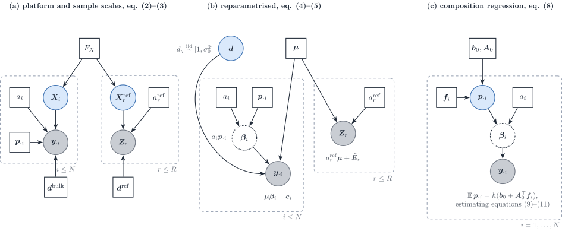
Figure 12: MEAD (Xie et al. 2026) in this vignette’s notation (a_i=\gamma_i, \boldsymbol{d}=\boldsymbol{\alpha}, \boldsymbol{\mu}=\mathbf{U}, replicate r = reference individual j of the paper). (a) Bulk and reference share the population law F_X of the type profiles but have their own sample scales and gene-wise platform factors. (b) After reparametrisation only the ratio d_g=\alpha_g/\alpha^{r}_g remains, treated as random noise around one, and the bulk mean is \boldsymbol{\mu}\boldsymbol{\beta}_i with \boldsymbol{\beta}_i=a_i\boldsymbol{p}_{\cdot i}. (c) Across individuals, the composition is regressed on covariates.
MEAD is the multivariate errors-in-variables method. Its successive models (Figure 12) are:
Scales (equations 2–3). The bulk is \boldsymbol{y}_i=\gamma_i\operatorname{diag}(\boldsymbol{\alpha})\mathbf{X}_i\boldsymbol{p}_i+\boldsymbol{\epsilon}_i and each reference individual is \mathbf{Z}^{r}_j=\gamma^{r}_j\operatorname{diag}(\boldsymbol{\alpha}^{r})\mathbf{X}^{r}_j+\mathbf{E}^{r}_j, with \mathbf{X}_i and \mathbf{X}^{r}_j drawn from one population law (assumption 1). \gamma_i captures sequencing depth and tissue size; \boldsymbol{\alpha} captures gene length and GC content. The reference scale is one scalar per reference individual, shared by all its cell types; cell efficiencies \gamma^{r}_{jc} vary around it (Supplementary S2.1). The authors deliberately avoid per-cell library-size normalisation so as to keep cell size in \mathbf{U}.
Reparametrisation (equations 4–5). Only \lambda_g=\alpha_g/\alpha^{r}_g is identified, and assumption 3 treats it as random noise, \lambda_g\overset{\text{iid}}{\sim}[1,\sigma_0^{2}], independent of \mathbf{U}. The model becomes \boldsymbol{y}_i=\mathbf{U}\boldsymbol{\beta}_i+\boldsymbol{e}_i with \boldsymbol{\beta}_i=\gamma_i\boldsymbol{p}_i and \boldsymbol{e}_i=(\boldsymbol{\Lambda}-\mathbf{I})\mathbf{U}\boldsymbol{\beta}_i+\boldsymbol{\epsilon}'_i. The platform ratio is not estimated; it inflates the variance and makes the \boldsymbol{e}_i dependent across samples.
-
One sample. With \hat\gamma_j=\sum_{k,g}z^{r}_{jgk}/(KG) (a plug-in from the reference alone, using the scaling constraint of assumption 2), \hat{\boldsymbol{\mu}}_g the average of \boldsymbol{z}^{r}_{jg}/\hat\gamma_j and \hat{\mathbf{V}}_g its covariance across reference individuals, the bias-corrected estimating equation
\hat{\mathbf{U}}^{\top}\mathbf{W}\boldsymbol{y}_i-\bigl(\hat{\mathbf{U}}^{\top}\mathbf{W}\hat{\mathbf{U}}-\hat{\mathbf{V}}\bigr)\boldsymbol{\beta}_i=\boldsymbol{0}, \qquad \hat{\mathbf{V}}=\sum_gw_g\hat{\mathbf{V}}_g, \tag{13}
removes the attenuation caused by a noisy design (equation 6). Non-negativity is imposed by truncation or constrained optimisation, and \hat{\boldsymbol{p}}_i=\hat{\boldsymbol{\beta}}_i/\|\hat{\boldsymbol{\beta}}_i\|_1.
Several samples (section 5). The composition is regressed on covariates, \mathbb{E}[\boldsymbol{p}_i]=h(\boldsymbol{b}_0+\mathbf{A}_0^{\top}\boldsymbol{f}_i), with \hat{\boldsymbol{p}}_i plugged into the estimating equation (11).
Gene–gene dependence. Dependence is global, not type specific: a dependency graph over genes enters only the sandwich covariance \hat{\boldsymbol{\Sigma}}_i through the set \mathcal{A} of dependent gene pairs. \mathcal{A} is estimated from the correlation of the bulk samples by a multiple test, because “reference data often lack sufficient samples to estimate cell-type-specific gene correlations”; cross-validation folds keep correlated genes together.
Weights from biological variation.
MuSiC’s weights use the residual variance of the target bulk, which “can severely bias” the estimating equation.MEADuses only the reference: s_g^{2}=\mathbf{1}^{\top}\hat{\mathbf{V}}_g\mathbf{1}, shrunk across genes by variance adaptive shrinkage, and w_g=1/\tilde s_g^{2}. The weights are independent of the bulk being deconvolved.
Identifiability (Theorem 1). With \operatorname{rank}(\mathbf{P})=K, the proportions are identifiable if and only if \mathbf{U} has full rank and, for every partition of the genes into t\ge 2 blocks, the ranks of the blocks of \mathbf{U} add to more than K. Perfect marker genes violate the condition: if each gene is expressed in one type only, rescaling the gene ratios of the type-k markers by 1/\delta_k, the proportions to \tilde p_{ik}=\delta_kp_{ik}/\sum_l\delta_lp_{il} and the scale to \tilde\gamma_i=\gamma_i\sum_l\delta_lp_{il} leaves the bulk mean unchanged, for any \delta. A gene-specific platform factor can then mimic a type-specific size factor, and more bulk samples do not help. The same rescaling is what a type-specific capture efficiency does (Supplementary Remark S1), and it is the q versus p ambiguity of alignment scales. Assumption 3 restores identification in model (5) because a \lambda_g that depends on the type of its marker is no longer independent of \mathbf{U} (our reading of the counterexample).
Asymptotics and slow regimes. The regime is G\to\infty with the number of reference individuals fixed. Theorems 2–3 give consistency of \hat\gamma_j at rate G^{-1/2} and \sqrt{G}(\hat{\boldsymbol{p}}_i-\boldsymbol{p}_i)\to\mathcal{N}\bigl(\boldsymbol{0},\nabla g\,\boldsymbol{\Omega}^{-1}\boldsymbol{\Sigma}_i\boldsymbol{\Omega}^{-1}\nabla g^{\top}\bigr) when every p_{ik}>0, under an “almost sparse” dependency graph (o(\sqrt G) genes may be arbitrarily dependent). Here \boldsymbol{\Omega}=\lim\tfrac1G\mathbf{U}^{\top}\mathbf{W}\mathbf{U} is a Gram limit, not a precision matrix. Four regimes are slow or fragile:
- the reference-noise term of \boldsymbol{\Sigma}_i does not shrink relative to the bulk term while the number of reference individuals stays fixed;
- collinear cell types inflate \boldsymbol{\Omega}^{-1};
- at the boundary (p_{ik}=0) the normal limit does not hold, and the softplus device that smooths it is inconsistent for finite tuning;
- the composition regression carries a bias of order G^{-1/2}, so naive inference under-covers unless N=o(G) (or N=o(G^{2}) under the global null; Theorem 4 and Remark S3).
DECALS reports that MEAD underestimates variances because its sandwich does not consistently estimate the subject-specific covariance.
DeCovarT and its three-layer extension
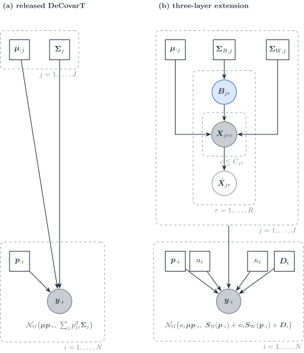
Figure 13: DeCovarT. (a) Released model: plug-in type moments and a quadratic convolution. (b) Three-layer extension: the replicate plate supplies \boldsymbol{\Sigma}_{B,j} and \boldsymbol{\Sigma}_{W,j}; the bulk plate carries a_i, \kappa_i, \boldsymbol{p}_{\cdot i} and a diagonal residual \boldsymbol{D}_i.
| Design error | Bulk law | Weight of type covariance | Scale | Estimator | |
|---|---|---|---|---|---|
RNA-Sieve |
Yes, gene-wise | Asymptotic normal, genes separate | Variance, not a precision matrix | Relative rescaling | Maximum likelihood, asymptotic regions |
MEAD |
Yes, multivariate | Moment conditions, not a full density | Gene–gene correlation retained | a_i and \boldsymbol{d}, with identifiability conditions | Errors-in-variables estimator, delta-method intervals |
DECALS |
Through \boldsymbol{\Sigma}_i(\boldsymbol{p}) | None | Subject-specific \boldsymbol{\Sigma}_i built from cell-type blocks | Absorbed before regression | Constrained least squares, asymptotic covariance |
RCTD |
No, \boldsymbol{\mu} plugged in | Poisson–log-normal mixture of reads, genes independent given \varepsilon | None | N_i known, \alpha_i and \boldsymbol{d} | Two-stage MLE; SQP on w\ge 0 |
ReDeconv |
No | Univariate parametric, pointwise | Linear in p_{ji} | CLTS keeps S_j | Variance-aware regression |
| DeCovarT now | No | Sparse multivariate normal, pointwise convolution | Quadratic in p_{ji} | a_i profiled, S_j not in the likelihood | Constrained MLE on the ILR chart |
| DeCovarT in the three-layer law | Only via \boldsymbol{\Sigma}_{W,j}/C_{jr} | Same normal family | Quadratic \boldsymbol{\Sigma}_{B,j} plus linear \boldsymbol{\Sigma}_{W,j} plus diagonal \boldsymbol{\Sigma}_{\mathrm{obs},i} | a_i outside, S_j in the mean | Constrained maximum likelihood |
RNA-Sieve and DeCovarT both obtain a normal bulk from a sum of random contributions. RNA-Sieve sums cells (linear variances, central limit, gene by gene). DeCovarT convolves population profiles (quadratic covariances, exact Gaussian, sparse precision). MEAD keeps the multivariate second-moment structure that RNA-Sieve drops, and adds the platform scales. DECALS wants the same subject-specific covariance but will not commit to a density; the price is a least-squares point estimate whose efficiency depends on how well \boldsymbol{\Sigma}_i is estimated. ReDeconv is the univariate, mixture-weighted cousin of the linear term in the three-layer law. RCTD is a read-level mixture with a Poisson–log-normal margin: each molecule comes from one type, \boldsymbol{\mu}_{\cdot j} is fixed, and extra-Poisson noise is gene-wise rather than a type-level \boldsymbol{\Sigma}_j.
The practical fork is the reference design, not a choice of optimiser.
-
R=1. Fit the linear within-type law. Report \boldsymbol{q}_{\cdot i} unless S_j is known, in which case apply the RNA-to-cell correction or insert S_j in the
MuSiCmean. Do not publish \boldsymbol{\Sigma}_{W,j} as a DeCovarT \boldsymbol{\Sigma}_j.RCTD’s plugged-in \boldsymbol{\mu}_{\cdot j} is this regime’s mean; its Poisson–log-normal is an alternative observation law for the same R=1 design, not a substitute for \boldsymbol{\Sigma}_{B,j}. - R\ge 2 with a sparse or low-rank between-replicate precision. Fit the three-layer law. The original quadratic term is then \boldsymbol{\Sigma}_{B,j} and has a sampling interpretation. \boldsymbol{\Sigma}_{\mathrm{obs},i} stays diagonal.
Cell-type-specific moments when the composition is known
The methods of Sec. 2 estimate the composition from known reference moments. The reverse problem takes the composition \{\boldsymbol{p}_{\cdot i}\} as known, from any of those methods, and estimates what DeCovarT plugs in: type-level means and covariances, or the purified profile of each type in each sample. Write the convolution with explicit latent profiles,
\boldsymbol{x}_{\cdot j,i}\sim(\boldsymbol{\mu}_{\cdot j},\boldsymbol{\Sigma}_j)\ \text{independent across }j, \qquad \boldsymbol{y}_{\cdot i}=\sum_jp_{ji}\,\boldsymbol{x}_{\cdot j,i}, \tag{14}
so that
\mathbb{E}[\boldsymbol{y}_{\cdot i}]=\boldsymbol{\mu}\boldsymbol{p}_{\cdot i}, \qquad \operatorname{Cov}(\boldsymbol{y}_{\cdot i})=\sum_jp_{ji}^{2}\boldsymbol{\Sigma}_j , \tag{15}
which is the released DeCovarT law when the profiles are Gaussian. Three families use these identities.
-
Type-level gene networks across a cohort.
CSNetregresses the outer products of bulk residuals on the squared proportions to estimate each \boldsymbol{\Sigma}_j, then thresholds the correlation (Sec. 3.1). -
Sample-level profiles with a covariance across cell types.
bMIND(Wang et al. 2020) andEPIC-unmix(Tang et al. 2025) place a J\times J covariance \boldsymbol{\Omega}_g across cell types for each gene, independent across genes;Unicoestimates that covariance without assuming independent cell types (Chen et al. 2025). Their covariance is the transpose of DeCovarT’s: it couples types within a gene, not genes within a type. - Sample-level profiles with a gene–gene covariance. With Gaussian profiles and known moments, the posterior mean of each \boldsymbol{x}_{\cdot j,i} is a Wiener filter; it is derived in the Bayesian Wiener-filter vignette.
On the measurement side, these methods need the bulk on a linear scale (FPKM for CSNet). When the bulk is normalised by its own library size, the known weights act as RNA fractions \boldsymbol{q}_{\cdot i}, not as cell fractions (Sec. 1).
Type-level moments given known proportions
CSNet inverts the DeCovarT arrow (Su et al. 2024). DeCovarT takes (\boldsymbol{\mu},\{\boldsymbol{\Sigma}_j\}) as plug-in and returns \boldsymbol{p}_{\cdot i}. CSNet takes \{\boldsymbol{p}_{\cdot i}\}_{i=1}^{N} as known (from CIBERSORT, MuSiC, or DeCovarT itself) and returns type-level means and a sparse correlation network. The generative identities are the same convolution as Eq. 14 and Eq. 15, written across a cohort rather than one sample:
\mathbb{E}[\boldsymbol{y}_{\cdot i}\mid\boldsymbol{p}_{\cdot i}] = \sum_j p_{ji}\,\boldsymbol{\mu}_{\cdot j}, \qquad \operatorname{Cov}(\boldsymbol{y}_{\cdot i}\mid\boldsymbol{p}_{\cdot i}) = \sum_j p_{ji}^{2}\,\boldsymbol{\Sigma}_j. \tag{16}
No Gaussian law is required for the moments. Let P\in\mathbb{R}^{N\times J} have entries P_{ij}=p_{ji} and H\in\mathbb{R}^{N\times J} have entries H_{ij}=p_{ji}^{2}. Gene-wise ordinary least squares on the linear mean recovers
\hat{\boldsymbol{\mu}}_{g\cdot} = (P^{\top}P)^{-1}P^{\top}\boldsymbol{y}_{g\cdot}, \tag{17}
the bulk analogue of a reference average, now identified from compositional contrast across samples rather than from purified cells. Centred residuals z_{gi}=y_{gi}-\sum_j p_{ji}\hat{\mu}_{gj} then satisfy the pairwise identity z_{gi}z_{g'i}=\sum_j p_{ji}^{2}\Sigma_{gg',j}+\varepsilon_{gg'i}. Least squares of the Hadamard products on H estimates each covariance entry,
\hat{\Sigma}_{gg',j} = \bigl[(H^{\top}H)^{-1}H^{\top}(\boldsymbol{z}_{g\cdot}\odot\boldsymbol{z}_{g'\cdot})\bigr]_{j}. \tag{18}
CSNet converts \hat{\boldsymbol{\Sigma}}_j to a correlation \hat{R}_j and applies an element-wise SCAD threshold. That is a marginal co-expression graph, not a Gaussian Markov precision. The Gaussian convolution log-likelihood in \{\boldsymbol{\Sigma}_j\}, which is the natural DeCovarT loss for the same parameters, is neither convex nor biconvex in those matrices; pairwise least squares is how CSNet avoids that optimisation (Su et al. 2024).
A DeCovarT-native sequel would keep Eq. 17–Eq. 18 as the moment step, then map \hat{\boldsymbol{\Sigma}}_j to a sparse precision \boldsymbol{\Omega}_j (graphical lasso, or SCAD on the inverse) so that the purified network is the same object DeCovarT already inserts into Eq. 15. That pipeline is in silico GRN inference run after \boldsymbol{p} has been estimated, not in place of it.
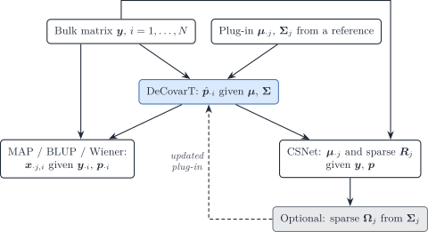
Figure 14: Two inverse problems on the same convolution. DeCovarT estimates p given mu and Sigma. Given p, the MAP / BLUP recovers sample-level purified profiles, and CSNet recovers type-level means and a sparse co-expression network. A precision Omega_j estimated there can be fed back as the DeCovarT plug-in.
P and H must have full column rank, so \boldsymbol{p}_{\cdot i} has to vary across the N bulks. One sample identifies \boldsymbol{p} given (\boldsymbol{\mu},\{\boldsymbol{\Sigma}_j\}); it does not identify J covariance matrices. Rare types with almost constant p_{ji} leave the corresponding column of H weak, which is why CSNet recovers abundant-type co-expression more easily than microglia-scale weights. The method is a moment estimator: modest errors in the supplied \boldsymbol{p} are averaged over N, whereas DeCovarT’s likelihood for a single column is concentrated in \boldsymbol{p}_{\cdot i}.
| DeCovarT | MAP / BLUP (the Wiener filter) | CSNet |
|
|---|---|---|---|
| Known | \boldsymbol{\mu}_{\cdot j}, \boldsymbol{\Sigma}_j (reference) | \boldsymbol{\mu}_{\cdot j}, \boldsymbol{\Sigma}_j, \boldsymbol{p}_{\cdot i} | \boldsymbol{p}_{\cdot i} (external or DeCovarT) |
| Unknown | \boldsymbol{p}_{\cdot i} | \boldsymbol{x}_{\cdot j,i} (one sample) | \boldsymbol{\mu}_{\cdot j}, sparse R_j (cohort) |
| Law | Multivariate Gaussian convolution | Same, posterior of the latents | Moments only; Gaussian optional |
| Second moment | Sparse precision \boldsymbol{\Omega}_j as input | Uses \boldsymbol{\Sigma}_j, does not re-estimate it | Sparse correlation R_j as output |
| Replication | One bulk column is enough | One bulk column | N\gg J bulks with varying \boldsymbol{p} |
| Estimator | Constrained MLE on the ILR chart | Posterior mean / Wiener gain | Gene-wise OLS, then pairwise LS, then SCAD |
The two problems compose. Fit DeCovarT to obtain \hat{\boldsymbol{p}}_{\cdot i}; run the Wiener filter if the scientific target is a purified profile in that sample; run Eq. 17–Eq. 18 if the target is a type-level network; optionally replace the reference \boldsymbol{\Omega}_j by that network and refit \boldsymbol{p}. Do not treat a CSNet correlation graph as a DeCovarT precision.
Bayesian reference-based deconvolution
Bayesian methods put priors on the purified profiles, on the proportions, or on both, and report posterior summaries. They split by target: sample-level profiles (Sec. 4.1) or proportions (Sec. 4.2). A latent-profile Bayesian version of DeCovarT is derived in the Bayesian Wiener-filter vignette.
Cell-type-specific profiles
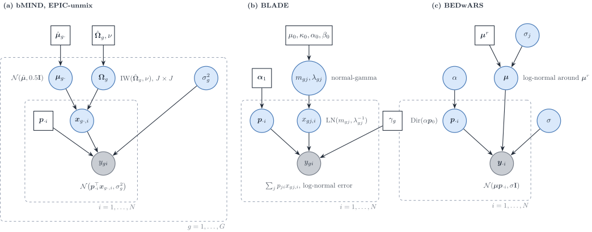
Figure 15: Bayesian models for cell-type-specific profiles, in this review’s notation. (a) bMIND and EPIC-unmix: for each gene, the sample-level profile across cell types is Gaussian with a J\times J covariance \boldsymbol{\Omega}_g under an inverse-Wishart prior centred on single-cell estimates; proportions are fixed. (b) BLADE: log-normal profiles with a normal-gamma prior, Dirichlet proportions, linear mixing. (c) BEDwARS: a cohort-level signature drawn around a noisy reference, Dirichlet proportions, Gaussian residuals.
bMIND estimates sample-level profiles for proportions estimated beforehand (by NNLS or Bisque) (Wang et al. 2020). For gene g and subject i,
y_{gi}=\boldsymbol{p}_{\cdot i}^{\top}\boldsymbol{x}_{g\cdot,i}+e_{gi}, \qquad \boldsymbol{x}_{g\cdot,i}\sim\mathcal{N}_J(\boldsymbol{\mu}_{g\cdot},\boldsymbol{\Omega}_g), \qquad e_{gi}\sim\mathcal{N}(0,\sigma_g^{2}), \tag{19}
with \boldsymbol{\mu}_{g\cdot}\sim\mathcal{N}(\hat{\boldsymbol{\mu}}_{g\cdot},0.5\mathbf{I}), \boldsymbol{\Omega}_g\sim\mathrm{IW}(\hat{\boldsymbol{\Omega}}_g,50) and a non-informative prior on \sigma_g^{2}; the hyperparameters come from single-cell or single-nucleus summary statistics. Sampling is by MCMC (MCMCglmm), gene by gene. Condition-specific means \boldsymbol{\mu}_g^{f} give tests of cell-type-specific differential expression. The authors note that the uncertainty of the estimated proportions is not propagated.
EPIC-unmix (Tang et al. 2025) keeps the bMIND model and adds a second, empirical-Bayes step: the prior is re-centred on the step-one posterior means and on their covariance across the target samples, with an increased number of degrees of freedom The target samples are therefore used twice. The bulk enters on the \log_2 scale, so the linear mixing of Eq. 19 is a mixing of logarithms, which is not the physical sum of cells (\log\sum_jp_jx_j\neq\sum_jp_j\log x_j).
BLADE estimates proportions and sample-level profiles jointly (Andrade Barbosa et al. 2021): y_{gi}=\sum_jp_{ji}x_{gj,i} plus a log-normal error, with x_{gj,i}\sim\mathrm{LN}(m_{gj},\lambda_{gj}^{-1}), a normal-gamma prior on (m_{gj},\lambda_{gj}) centred on the log-scale mean and variance of single-cell data, and \boldsymbol{p}_{\cdot i}\sim\mathrm{Dir}(\boldsymbol{\alpha}_1). The mixing is on the linear scale (TPM). Inference is collapsed variational, with hyperparameters chosen on a grid by likelihood. The model is diagonal: no covariance across genes or across types.
BEDwARS treats the reference itself as noisy (Ghaffari et al. 2023): y_{gi}=\sum_j\mu_{gj}p_{ji}+E_{gi}, \log\mu_{gj}\sim\log\mu^{r}_{gj}+\mathcal{N}(0,\sigma_j^{2}\log\mu^{r}_{gj}), \boldsymbol{p}_{\cdot i}\sim\mathrm{Dir}(\alpha\boldsymbol{p}_0), with half-Cauchy hyperpriors and Metropolis–Hastings chains. The signature is cohort-level: there is no sample-level profile. As written, the prior variance \sigma_j^{2}\log\mu^{r}_{gj} is not positive for reference values at or below one RPKM (our remark).
BayesPrism places a multinomial likelihood on bulk counts with a patient-derived single-cell prior and infers proportions and sample-level profiles jointly (Chu et al. 2022). The multinomial is the Poisson measurement model conditioned on the library size (Sec. 1.1), so BayesPrism is the count-scale member of this family.
| Method | Bulk scale | Profile prior | Covariance | Proportions | Inference | Output |
|---|---|---|---|---|---|---|
bMIND |
linear (not stated) | \mathcal{N}(\boldsymbol{\mu}_g,\boldsymbol{\Omega}_g) | IW on J\times J \boldsymbol{\Omega}_g | fixed | MCMC | sample-level profiles |
EPIC-unmix |
\log_2 | as bMIND, re-centred |
IW on J\times J, empirical Bayes | fixed | MCMC, two steps | sample-level profiles |
BLADE |
linear (TPM) | log-normal, normal-gamma | none | Dirichlet | collapsed VI | proportions, sample-level profiles |
BEDwARS |
linear (RPKM) | log-normal around the reference | none | Dirichlet | MH chains | proportions, cohort signature |
BayesPrism |
counts | from single cells | none | Dirichlet | Gibbs | proportions, sample-level profiles |
The contrast with DeCovarT is the dimension of the covariance. bMIND and EPIC-unmix model how cell types covary for one gene across subjects; DeCovarT models how genes covary within one cell type. A separable covariance \operatorname{Cov}(\operatorname{vec}\boldsymbol{X}_i)=\boldsymbol{\Omega}\otimes\boldsymbol{\Sigma} for the G\times J matrix of purified profiles would contain both as special cases (our remark); no reviewed method fits it.
Proportions
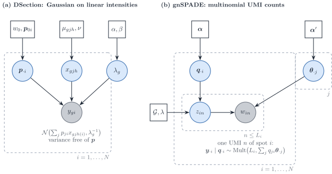
Figure 16: Bayesian estimation of proportions from continuous intensities or from counts. (a) DSection: Gaussian bulk on linear intensities with condition-specific type profiles, a gene-wise precision and an informative Dirichlet prior on the proportions. (b) gnSPADE: each UMI of a spot draws a type label and then a gene, so the spot counts are multinomial with a probability vector that mixes the type profiles; a gene network enters as a Markov random field on the labels.
DSection is the continuous, Gaussian route (Erkkilä et al. 2010): y_{gi}\sim\mathcal{N}\bigl(\sum_jp_{ji}x_{gjc(i)},\lambda_g^{-1}\bigr), with condition-specific type profiles x_{gjc}\sim\mathcal{N}(\mu_{gjc},\nu), \lambda_g\sim\mathrm{Gamma}(\alpha,\beta) and \boldsymbol{p}_{\cdot i}\sim\mathrm{Dir}(w_0\boldsymbol{p}_{0i}) centred on a prior guess of the proportions, which is needed for identifiability. Sampling is Gibbs for the profiles and the precision and Metropolis–Hastings with Dirichlet proposals for the proportions. The paper offers no log-normal option and recommends linear data. The variance depends on the gene but not on the proportions.
gnSPADE (Xie and Cui 2026) is the count route, and it is reference-free. Each UMI of spot i draws a label z\sim\mathrm{Mult}(\boldsymbol{\theta}_i) and then a gene from the profile of that label, so \boldsymbol{y}_{\cdot i}\mid\boldsymbol{\theta}_i\sim\mathrm{Mult}(N_i,\sum_j\theta_{ij}\boldsymbol{\beta}_j): latent Dirichlet allocation with a Markov random field over the labels built from a protein interaction network. Inference is collapsed Gibbs.
The two differ where the measurement model of Sec. 1 bites.
-
Variance. In
gnSPADEthe variance is fixed by the mean (the multinomial is a Poisson measurement conditioned on the total). InDSectionit is a free gene-wise constant that does not grow with the mean, which a UMI measurement contradicts. -
What the weights are.
gnSPADEshares UMIs, so \boldsymbol{\theta}_i are transcript fractions \boldsymbol{q}_{\cdot i}; converting them to cell fractions needs S_j.DSectionestimates whatever its reference scale encodes. -
Profile variability. Neither model has a type-level variability of profiles across samples beyond the prior of
DSection; neither has a gene–gene covariance. The gene network ofgnSPADEacts on labels, not on expression.
Semi-reference deconvolution: one unknown component
Semi-reference methods have references for J-1 types and estimate an unknown component, usually tumour, together with the proportions. With one component unknown, the convolution of univariate laws has to be written explicitly, and its tractability drives the choice of law.
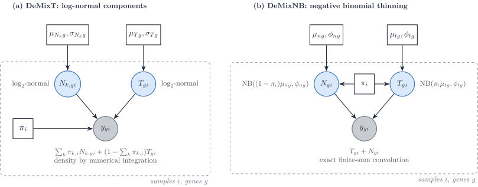
Figure 17: Two semi-reference convolutions of univariate components. (a) DeMixT: log-normal components mixed linearly on the raw scale; the density of the sum has no closed form and is integrated numerically. (b) DeMixNB: each component is a negative binomial whose mean is already scaled by its proportion; the density of the sum is an exact finite sum.
DeMix and DeMixT. DeMix mixes a tumour and one normal component; DeMixT adds a second normal component (Ahn et al. 2013; Wang et al. 2018):
y_{gi}=\pi_{1,i}N_{1,gi}+\pi_{2,i}N_{2,gi}+(1-\pi_{1,i}-\pi_{2,i})T_{gi}, \qquad N_{k,gi},T_{gi}\sim\log_2\text{-normal}. \tag{20}
The mixing is linear on the raw scale, and the density of a sum of log-normals has no closed form, so DeMixT integrates numerically (a double integral for three components). The normal-component parameters are plugged in from unmatched normal samples; the proportions and the tumour parameters are maximised by iterated conditional modes, gene and sample blocks in parallel. When the two normal means are close, the likelihood is flat in (\pi_1,\pi_2); a gene-set component-merging step first estimates the tumour proportion on genes where they agree. Genes are independent.
DeMixNB replaces the log-normal by a negative binomial for sparse counts (miRNA, spatial spots) (Montierth et al. 2025): T_{gi}\sim\mathrm{NB}(\pi_i\mu_{tg},\phi_{tg}), N_{gi}\sim\mathrm{NB}((1-\pi_i)\mu_{ng},\phi_{ng}) and y_{gi}=T_{gi}+N_{gi}, whose density is the finite sum \sum_{z=0}^{y}f_T(z)f_N(y-z). The proportions scale the means, not the dispersions. Read with Sec. 1, \mathrm{NB}(\pi\mu,\phi) is the binomial thinning of \mathrm{NB}(\mu,\phi): a Poisson measurement of a Gamma-distributed rate, with the rates mixed linearly (our remark). That makes DeMixNB the semi-reference model closest to a UMI measurement. Its \pi_i is a transcript fraction. The method is a preprint.
BayICE models \log(\text{count}+1) as Gaussian with mean \alpha_g+\sum_kw_{ik}\beta_{gk}+w_{i0}\beta_{g0}, a convex combination of type effects plus an unknown-class effect, with spike-and-slab priors on the type effects (marker selection with a Bayesian false discovery rate) and a Dirichlet prior on the weights (Tai et al. 2021). Inference is Gibbs with Metropolis–Hastings steps. The mixing is on the log scale, so it is a mean regression rather than a convolution, and the variances are gene-wise, not type-specific.
ISOpureR places a multinomial on the discretised tumour profile, with probability vector \alpha_i\boldsymbol{c}_i+\sum_r\theta_{ir}\boldsymbol{b}_r: the normal part is a convex combination of individual reference samples, the cancer profile \boldsymbol{c}_i is shrunk towards a cohort mean by a Dirichlet prior, and the estimate is a MAP by block coordinate descent (Anghel et al. 2015). Genes are coupled through the multinomial simplex; there is no overdispersion. Its \alpha_i is a fraction of transcripts.
DeMix, DeMixT
|
DeMixNB |
BayICE |
ISOpureR |
|
|---|---|---|---|---|
| Component law | \log_2-normal | negative binomial | Gaussian on \log(y+1) | multinomial, Dirichlet profiles |
| Mixing scale | raw | counts | log | probabilities |
| Convolution | numerical integration | exact finite sum | none (mean regression) | none (closed by thinning) |
| Inference | ICM, plug-in reference | ICM, L-BFGS-B, restarts | Gibbs and MH | MAP, coordinate descent |
| Genes | independent | independent | conditionally independent | coupled by the simplex |
| Proportion | mixing weight on raw scale | transcript fraction | weight on log scale | transcript fraction |
Reference-free deconvolution with co-expression structure
Without a reference, deconvolution is a non-negative matrix factorisation \boldsymbol{Y}\approx\boldsymbol{\mu}\boldsymbol{P} with the columns of \boldsymbol{P} on the simplex. Three recent methods add gene–gene structure to that factorisation, in three different ways.
DSSC (Wang et al. 2024) fits the bulk and, in addition, the Gram matrices of genes and of samples :
\min_{\boldsymbol{\mu},\boldsymbol{P}\ge 0} \lVert\boldsymbol{Y}-\boldsymbol{\mu}\boldsymbol{P}\rVert_F^{2} +\lambda_1\lVert\boldsymbol{K}_N-\boldsymbol{P}^{\top}\boldsymbol{P}\rVert_F^{2} +\lambda_2\lVert\boldsymbol{K}_G-\boldsymbol{\mu}\boldsymbol{\mu}^{\top}\rVert_F^{2} +\lambda_c\lVert\boldsymbol{\mu}-\rho(\boldsymbol{Y}_{\mathrm{sc}})\rVert_F^{2}, \tag{21}
where \boldsymbol{K}_G and \boldsymbol{K}_N are similarity kernels 1/(1+d) built from Pearson distances of the same bulk, and the last term optionally pulls the signature towards a single-cell reference. Multiplicative updates are run without the sum-to-one constraint and the proportions are normalised afterwards. The gene term matches \boldsymbol{\mu}\boldsymbol{\mu}^{\top} to a data similarity; expanded, it keeps the affinity part of a graph-Laplacian penalty and replaces its degree term by a quartic term, so it corresponds to no Gaussian Markov random field (our remark).
GSNMF+ (Li et al. 2025) regularises the rows of the signature with a kernel co-expression graph built on the bulk augmented by single-cell pseudo-bulks, and pulls marker rows towards the simplex vertices It states identifiability conditions (separability, or sufficiently scattered factors) and that the Frobenius loss is the Gaussian maximum-likelihood estimate. With a Euclidean distance its graph term would be \operatorname{tr}(\boldsymbol{\mu}^{\top}\boldsymbol{L}_G\boldsymbol{\mu}), the log-density of an intrinsic Gaussian Markov random field prior on the signature; with the cosine distance it uses, the term is quartic.
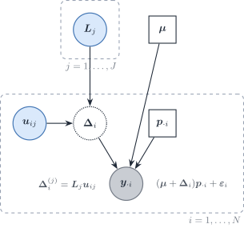
Figure 18: swCAM read as a probabilistic model (our reading, not the paper’s). The nuclear-norm penalty on the sample-specific deviations of type j is the MAP of a Gaussian factor model with loadings \boldsymbol{V}_j and sample scores \boldsymbol{u}_{ij}, which implies a low-rank gene–gene covariance within each cell type.
swCAM estimates sample-specific signatures (Chen et al. 2022). After convex analysis of mixtures has fixed \boldsymbol{\mu} and \boldsymbol{P}, it solves
\min_{\{\boldsymbol{\Delta}_i\}} \tfrac12\sum_i\lVert\boldsymbol{y}_{\cdot i}-(\boldsymbol{\mu}+\boldsymbol{\Delta}_i)\boldsymbol{p}_{\cdot i}\rVert_2^{2} +\lambda\sum_j\lVert\boldsymbol{T}_j\rVert_{*}, \tag{22}
where \boldsymbol{T}_j stacks the deviations of type j over samples and \lVert\cdot\rVert_* is the nuclear norm. The problem is convex for fixed \boldsymbol{\mu} and \boldsymbol{P} and is solved by ADMM. There is no co-expression graph. Because \lVert\boldsymbol{T}\rVert_*=\min_{\boldsymbol{U}\boldsymbol{V}^{\top}=\boldsymbol{T}}\tfrac12(\lVert\boldsymbol{U}\rVert_F^{2}+\lVert\boldsymbol{V}\rVert_F^{2}), the penalty is the MAP of a Gaussian factor model (Figure 18), which implies a low-rank gene–gene covariance within each type.
Three ways gene covariance enters deconvolution
-
Graph regularisation of a factorisation. A co-expression graph smooths the signature (
GSNMF+). Its probabilistic reading is a Gaussian Markov random field prior on the signature, exact only for a Euclidean, quadratic penalty. -
Similarity matching to the bulk itself. The Gram matrices of the factors are fitted to similarities computed from the same data (
DSSC). The data are used twice, and no likelihood is implied. -
Covariance in a likelihood, a moment equation or a prior. The gene–gene covariance of each type enters the bulk law: as a plug-in in DeCovarT, as moment equations in
DECALSandMEAD, as the estimand inCSNet, and implicitly as a low-rank factor structure inswCAM.bMINDandEPIC-unmixbelong here with the transposed object, a covariance across cell types.
All three reference-free methods use a squared Frobenius loss, that is a homoscedastic Gaussian likelihood, and therefore ignore the mean–variance relationship of counts (Sec. 1.1).
Synthesis
| Method | Bulk scale | Bulk variance as a function of \boldsymbol{p} | Gene–gene covariance | Type–type covariance | Reference uncertainty | Estimator |
|---|---|---|---|---|---|---|
MuSiC |
relative abundance | quadratic, diagonal | no | no | weights | weighted NNLS |
RNA-Sieve |
counts / linear | linear, diagonal | no | no | noisy means | MLE, Godambe |
ReDeconv |
linear (CLTS) | linear, diagonal | no | no | no | MLE |
DWLS |
linear | implied quadratic in the mean | no | no | no | weighted LS |
RCTD |
counts | Poisson–log-normal | no | no | no | two-stage MLE |
DECALS |
FPKM | quadratic | yes (moments) | no | no | OLS + sandwich |
MEAD |
linear | sandwich over dependent genes | yes (global) | no | yes | estimating equations |
| DeCovarT | linear | quadratic | yes (plug-in, sparse) | no | bootstrap | MLE |
CSNet |
FPKM | quadratic | yes (estimand) | no | no | moments + thresholding |
bMIND, EPIC-unmix
|
linear / \log_2 | \boldsymbol{p}^{\top}\boldsymbol{\Omega}_g\boldsymbol{p}+\sigma_g^{2} | no | yes (J\times J) | prior | MCMC |
BLADE |
linear | quadratic, log-normal profiles | no | no | prior | collapsed VI |
BEDwARS |
linear | constant | no | no | noisy reference prior | MH |
DSection |
linear | constant | no | no | prior | Gibbs–MH |
DeMixT |
raw | quadratic, log-normal components | no | no | plug-in | ICM |
DeMixNB |
counts | negative binomial | no | no | plug-in | ICM |
swCAM |
linear | constant | low rank (implicit) | no | no | ADMM |
Caveats and defaults
-
Scale. Mixing is additive only on a linear scale. Methods that mix logarithms (
BayICE,EPIC-unmix) estimate weights of a different, non-physical sum. -
Cell versus RNA fractions. Count and topic models (
ISOpureR,gnSPADE,DeMixNB,BayesPrism) and any fit on library-normalised bulk return transcript fractions; cell fractions need the cell sizes S_j (RNA-to-cell conversion). -
Mean–variance relationship. A constant residual variance (
DSection,BEDwARS, NMF with a Frobenius loss) contradicts the Poisson measurement of UMI counts, whose variance grows with the mean. Count likelihoods or explicit variance functions respect it (GLM view). -
Linear or quadratic weights. Independent cells give a variance linear in the proportions (
RNA-Sieve,ReDeconv); a random population profile gives a quadratic weight (MuSiC,DECALS,CSNet, DeCovarT). Single-cell references with one donor identify only the first (tailored vignette). -
Which covariance. G\times G within a type (DeCovarT,
DECALS,CSNet) and J\times J within a gene (bMIND,EPIC-unmix,Unico) answer different questions; neither family fits both. -
Data reuse. Empirical-Bayes re-centring on the target samples (
EPIC-unmix), similarity graphs built from the bulk being factorised (DSSC,GSNMF+) and priors built from the same single-cell source as the benchmark bulk (BLADEgroup mode) inflate apparent accuracy. -
Propagated uncertainty. Few methods propagate the uncertainty of the reference (
RNA-Sieve,MEAD, DeCovarT’s reference bootstrap) or of the proportions into downstream profiles (bMINDdoes not). -
Identifiability. Gene-wise scales with perfect markers (
MEAD), collinear reference means (DeMixT), and reference-free factorisations without separability (GSNMF+) all leave the proportions unidentified, whatever the sample size.
Methods to add to this review
Already in the bibliography and worth a section: BLEND, probabilistic deconvolution with automated reference selection (Huang et al. 2024); DeconV, a Poisson model aggregated from single cells (Gynter et al. 2023); Unico for the covariance across cell types (Chen et al. 2025); Imply, personalised reference profiles (Meng et al. 2024); and DecOT, an optimal transport loss (Liu et al. 2022). CIBERSORTx (Newman et al. 2019) extends the signature approach to high-resolution, sample-level profiles.
References
Abbas, Alexander R., Kristen Wolslegel, Dhaya Seshasayee, Zora Modrusan, and Hilary F. Clark. 2009. ‘Deconvolution of Blood Microarray Data Identifies Cellular Activation Patterns in Systemic Lupus Erythematosus’. PloS One 4. https://doi.org/10.1371/journal.pone.0006098.
Ahn, Jaeil, Ying Yuan, Giovanni Parmigiani, et al. 2013. ‘DeMix: Deconvolution for Mixed Cancer Transcriptomes Using Raw Measured Data’. Bioinformatics (Oxford, England) 29. https://doi.org/10.1093/bioinformatics/btt301.
Andrade Barbosa, Bárbara, Saskia D. van Asten, Ji Won Oh, et al. 2021. ‘Bayesian Log-Normal Deconvolution for Enhanced in Silico Microdissection of Bulk Gene Expression Data’. Nature Communications 12 (1). https://doi.org/10.1038/s41467-021-26328-2.
Anghel, Catalina V, Gerald Quon, Syed Haider, et al. 2015. ‘ISOpureR: An R Implementation of a Computational Purification Algorithm of Mixed Tumour Profiles’. BMC Bioinformatics 16. https://doi.org/10.1186/s12859-015-0597-x.
Batardière, Bastien, Julien Chiquet, François Gindraud, and Mahendra Mariadassou. 2025. ‘Zero-Inflation in the Multivariate Poisson Lognormal Family’. Statistics and Computing 35 (6). https://doi.org/10.1007/s11222-025-10729-0.
Cable, Dylan M., Evan Murray, Luli S. Zou, et al. 2022. ‘Robust Decomposition of Cell Type Mixtures in Spatial Transcriptomics’. Nature Biotechnology 40 (4): 517–26. https://doi.org/10.1038/s41587-021-00830-w.
Cai, Biao, Emma Jingfei Zhang, Hongyu Li, Chang Su, and Hongyu Zhao. 2024. ‘Statistical Inference of Cell-Type Proportions Estimated from Bulk Expression Data’. Journal of the American Statistical Association 119 (548): 2521–32. https://doi.org/10.1080/01621459.2024.2382435.
Chen, Lulu, Chiung-Ting Wu, Chia-Hsiang Lin, et al. 2022. ‘swCAM: Estimation of Subtype-Specific Expressions in Individual Samples with Unsupervised Sample-Wise Deconvolution’. Bioinformatics 38 (5): 1403–10. https://doi.org/10.1093/bioinformatics/btab839.
Chen, Zeyuan Johnson, Elior Rahmani, and Eran Halperin. 2025. ‘Unico: A Unified Model for Cell-Type Resolution Genomics from Heterogeneous Omics Data’. Genome Biology 26 (1). https://doi.org/10.1186/s13059-025-03776-3.
Chiquet, Julien, Mahendra Mariadassou, and Stéphane Robin. 2018. Variational Inference for Sparse Network Reconstruction from Count Data. arXiv. https://doi.org/10.48550/arxiv.1806.03120.
Chiquet, Julien, Mahendra Mariadassou, and Stéphane Robin. 2021. ‘The Poisson-Lognormal Model as a Versatile Framework for the Joint Analysis of Species Abundances’. Frontiers in Ecology and Evolution 9. https://doi.org/10.3389/fevo.2021.588292.
Chu, Tinyi, Zhong Wang, Dana Pe’er, and Charles G. Danko. 2022. ‘Cell Type and Gene Expression Deconvolution with BayesPrism Enables Bayesian Integrative Analysis Across Bulk and Single-Cell RNA Sequencing in Oncology’. Nature Cancer 3 (4): 505–17. https://doi.org/10.1038/s43018-022-00356-3.
Erdmann-Pham, Dan D., Jonathan Fischer, Justin Hong, and Yun S. Song. 2021. ‘Likelihood-Based Deconvolution of Bulk Gene Expression Data Using Single-Cell References’. Genome Research 31 (10): 1794–806. https://doi.org/10.1101/gr.272344.120.
Erkkilä, Timo, Saara Lehmusvaara, Pekka Ruusuvuori, Tapio Visakorpi, Ilya Shmulevich, and Harri Lähdesmäki. 2010. ‘Probabilistic Analysis of Gene Expression Measurements from Heterogeneous Tissues’. Bioinformatics 26. https://doi.org/10.1093/bioinformatics/btq406.
Fan, Jiaxin, Yafei Lyu, Qihuang Zhang, Xuran Wang, Mingyao Li, and Rui Xiao. 2022. ‘MuSiC2: Cell-Type Deconvolution for Multi-Condition Bulk RNA-seq Data’. Briefings in Bioinformatics 23 (6). https://doi.org/10.1093/bib/bbac430.
Fang, Meichen, and Lior Pachter. 2025. Extrinsic Biological Stochasticity and Technical Noise Normalization of Single-Cell RNA Sequencing Data. bioRxiv preprint; bioRxiv. https://doi.org/10.1101/2025.05.11.653373.
Ghaffari, Saba, Kelly J. Bouchonville, Ehsan Saleh, Remington E. Schmidt, Steven M. Offer, and Saurabh Sinha. 2023. ‘BEDwARS: A Robust Bayesian Approach to Bulk Gene Expression Deconvolution with Noisy Reference Signatures’. Genome Biology 24 (1): 178. https://doi.org/10.1186/s13059-023-03007-7.
Gynter, Artur, Dimitri Meistermann, Harri Lähdesmäki, and Helena Kilpinen. 2023. DeconV: Probabilistic Cell Type Deconvolution from Bulk RNA-sequencing Data. bioRxiv. https://doi.org/10.1101/2023.12.07.570524.
Huang, Penghui, Manqi Cai, Chris McKennan, and Jiebiao Wang. 2024. BLEND: Probabilistic Cellular Deconvolution with Automated Reference Selection. bioRxiv. https://doi.org/10.1101/2024.08.02.606458.
Jew, Brandon, Marcus Alvarez, Elior Rahmani, et al. 2020. ‘Accurate Estimation of Cell Composition in Bulk Expression Through Robust Integration of Single-Cell Information’. Nature Communications 11. https://doi.org/10.1038/s41467-020-15816-6.
Lähdesmäki, Harri, llya Shmulevich, Valerie Dunmire, Olli Yli-Harja, and Wei Zhang. 2005. ‘In Silico Microdissection of Microarray Data from Heterogeneous Cell Populations’. BMC Bioinformatics 6. https://doi.org/10.1186/1471-2105-6-54.
Li, Shaoyu, Su Xu, Xue Wang, Nilüfer Ertekin-Taner, and Duan Chen. 2025. ‘An Augmented GSNMF Model for Complete Deconvolution of Bulk RNA-Seq Data’. Mathematical Biosciences and Engineering : MBE 22 (4): 988–1018. https://doi.org/10.3934/mbe.2025036.
Liu, Gan, Xiuqin Liu, and Liang Ma. 2022. ‘DecOT: Bulk Deconvolution with Optimal Transport Loss Using a Single-Cell Reference’. Frontiers in Genetics 13. https://doi.org/10.3389/fgene.2022.825896.
Lu, Songjian, Jiyuan Yang, Lei Yan, et al. 2025. ‘Transcriptome Size Matters for Single-Cell RNA-seq Normalization and Bulk Deconvolution’. Nature Communications 16 (1). https://doi.org/10.1038/s41467-025-56623-1.
Meng, Guanqun, Yue Pan, Wen Tang, et al. 2024. ‘Imply: Improving Cell-Type Deconvolution Accuracy Using Personalized Reference Profiles’. Genome Medicine 16 (1): 65. https://doi.org/10.1186/s13073-024-01338-z.
Montierth, Matthew D., Hao Yan, Liyang Xie, et al. 2025. Deconvolution of Sparse-count RNA Sequencing Data for Tumor Cells Using Embedded Negative Binomial Distributions. bioRxiv. https://doi.org/10.1101/2025.11.21.689822.
Newman, Aaron M., Chloé B. Steen, Chih Long Liu, et al. 2019. ‘Determining Cell Type Abundance and Expression from Bulk Tissues with Digital Cytometry’. Nature Biotechnology 37. https://doi.org/10.1038/s41587-019-0114-2.
Sarkar, Abhishek, and Matthew Stephens. 2021. ‘Separating Measurement and Expression Models Clarifies Confusion in Single-Cell RNA Sequencing Analysis’. Nature Genetics 53 (6): 770–77. https://doi.org/10.1038/s41588-021-00873-4.
Shen-Orr, Shai S., Robert Tibshirani, Purvesh Khatri, et al. 2010. ‘Cell Type–Specific Gene Expression Differences in Complex Tissues’. Nature Methods 7. https://doi.org/10.1038/nmeth.1439.
Su, Chang, Jingfei Zhang, and Hongyu Zhao. 2024. ‘Estimating Cell-Type-Specific Gene Co-Expression Networks from Bulk Gene Expression Data with an Application to Alzheimer’s Disease’. Journal of the American Statistical Association 119 (546): 811–24. https://doi.org/10.1080/01621459.2023.2297467.
Tai, An-Shun, George C. Tseng, and Wen-Ping Hsieh. 2021. ‘BayICE: A Bayesian Hierarchical Model for Semireference-Based Deconvolution of Bulk Transcriptomic Data’. The Annals of Applied Statistics 15 (1). https://doi.org/10.1214/20-aoas1376.
Tang, Chenwei, Quan Sun, Xinyue Zeng, et al. 2025. ‘Cell Type-Specific Inference from Bulk RNA-Sequencing Data by Integrating Single-Cell Reference Profiles via EPIC-Unmix’. Genome Biology 26 (1): 395. https://doi.org/10.1186/s13059-025-03847-5.
Tsoucas, Daphne, Rui Dong, Haide Chen, Qian Zhu, Guoji Guo, and Guo-Cheng Yuan. 2019. ‘Accurate Estimation of Cell-Type Composition from Gene Expression Data’. Nature Communications 10. https://doi.org/10.1038/s41467-019-10802-z.
Wang, Chenqi, Yifan Lin, Shuchao Li, and Jinting Guan. 2024. ‘Deconvolution from Bulk Gene Expression by Leveraging Sample-Wise and Gene-Wise Similarities and Single-Cell RNA-Seq Data’. BMC Genomics 25 (1): 875. https://doi.org/10.1186/s12864-024-10728-x.
Wang, Jiebiao, Kathryn Roeder, and Bernie Devlin. 2020. Bayesian Estimation of Cell-Type-Specific Gene Expression Per Bulk Sample with Prior Derived from Single-Cell Data. openRxiv; openRxiv. https://doi.org/10.1101/2020.08.05.238949.
Wang, Xuran, Jihwan Park, Katalin Susztak, Nancy R. Zhang, and Mingyao Li. 2019. ‘Bulk Tissue Cell Type Deconvolution with Multi-Subject Single-Cell Expression Reference’. Nature Communications 10. https://doi.org/10.1038/s41467-018-08023-x.
Wang, Zeya, Shaolong Cao, Jeffrey S. Morris, et al. 2018. ‘Transcriptome Deconvolution of Heterogeneous Tumor Samples with Immune Infiltration’. iScience 9. https://doi.org/10.1016/j.isci.2018.10.028.
Xie, Aoqi, and Yuehua Cui. 2026. ‘gnSPADE: Incorporating Gene Network Structures Enhances Reference-Free Deconvolution in Spatial Transcriptomics’. Advanced Intelligent Systems 8 (4): e202500639. https://doi.org/10.1002/aisy.202500639.
Xie, Dongyue, Lin Gui, and Jingshu Wang. 2026. ‘Statistical Inference for Cell Type Deconvolution’. Journal of the Royal Statistical Society Series B: Statistical Methodology 88 (4): 1449–68. https://doi.org/10.1093/jrsssb/qkag054.